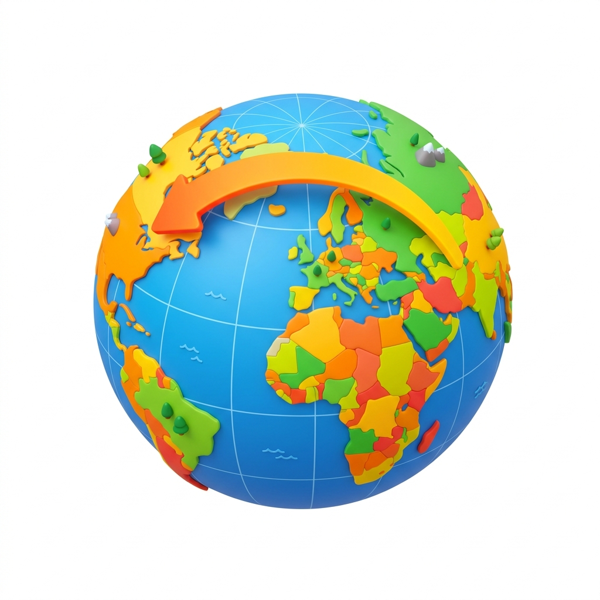
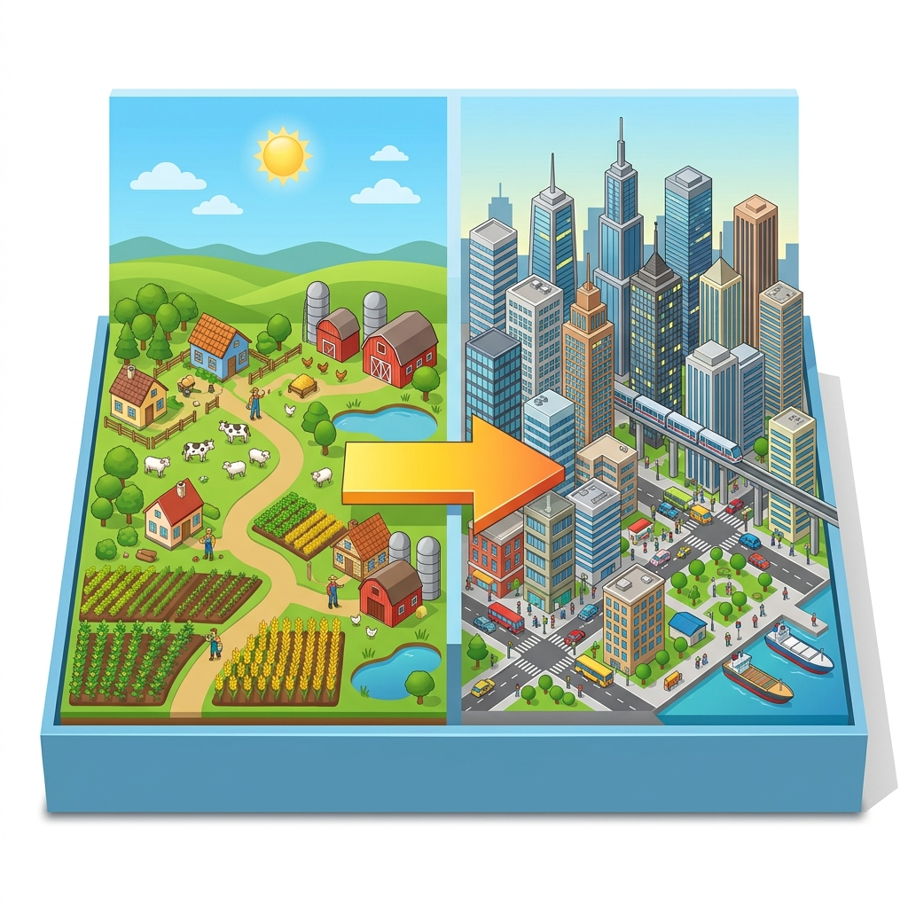

Vardaan Learning Institute
Class 8 Geography • Chapter Notes
🌐 vardaanlearning.com📞 9508841336
Migration
1. Introduction to Migration

Migration is the movement of people from one place to another with the purpose of settling at the destination or living there for a relatively long period of time. It often takes place across political or administrative boundaries and can be either temporary or permanent, voluntary or forced.
Concept
Two Core Processes of Migration:
- Emigration: The movement of people out of a region or country. The place from where people are moving out is called the sending country.
- Immigration: The movement of people into a region or country. The place where people are moving in is called the receiving country.
2. Types of Migration

Migration is broadly classified into two main types: Internal and External.
A. Internal Migration
Internal Migration refers to the movement of people within the same country. It happens in various ways:
- Rural to Urban Migration: Moving from villages to cities. Driven by poverty, unemployment, and lack of social amenities. (Common in Asia and South America).
- Urban to Urban Migration: Moving from a small town to a larger metropolitan city (e.g., small towns to Delhi/Mumbai) for better jobs, education, and health facilities.
- Rural to Rural Migration: Moving from one village to another, usually when farmers seek less populated areas with more fertile land or better irrigation.
- Urban to Rural Migration: Moving from cities to villages or suburbs. This happens when cities become overpopulated, leading to pollution and housing shortages.
- Forced Migration: Political unrest or conflict forcing people out of their homes.
- Short-term Migration: Temporary displacement due to natural disasters like earthquakes, floods, or cyclones.
B. External (International) Migration
External Migration refers to the movement of people from one country to another across international borders.
- Legal Migration: Moving with the legal permission of the receiving country (e.g., South Asians moving to the USA, UK, or Canada for better prospects).
- Illegal Migration: Crossing borders without legal permission, violating the immigration laws of the receiving country.
- Crisis-Induced Migration: Caused by natural calamities (famine in Ethiopia), climate change (sinking islands in the South Pacific), communal tension (Partition of India in 1947), or civil war (Syria).
3. Causes of Migration
Important
Push vs. Pull Factors
Push Factors: Conditions that force or encourage people to move out of a region. Examples include poverty, unemployment, and lack of social amenities.
Pull Factors: Conditions that attract or encourage people to move into a region. Examples include better employment, higher living standards, and stable economy.
4. Impact of Migration
Migration has a massive socio-economic impact on both the sending and receiving regions.
Positive Impacts
- Reduces population pressure in overpopulated areas.
- Provides a steady supply of labor to urban industries.
- Remittances: Sending countries benefit economically from the money migrants send back home.
- Enriches the cultural diversity of the receiving country.
Negative Impacts
- Leads to a shortage of agricultural labor in villages.
- Big cities get overcrowded, straining social amenities (water, electricity, transport).
- Severe housing shortages in cities lead to the growth of slums.
- International migration results in the loss of valuable human resources for the sending country.
5. Brain Drain
Fact
Brain Drain (also known as Human Capital Flight) is the large-scale emigration of highly educated or skilled people from one country to another, usually from developing nations to developed ones.
Causes of Brain Drain
- Push Factors: Lack of highly paid jobs, lack of research facilities/funds, poor working conditions.
- Pull Factors: Highly paid jobs, superior research facilities, advanced technology, high standard of living.
Impact of Brain Drain
- Positive Effects: Migrants acquire advanced knowledge. If they return, the home country utilizes this expertise. Remittances boost the economy.
- Negative Effects: Severe shortage of skilled labor (doctors, engineers, scientists) in the home country. The investment in their education goes to waste.